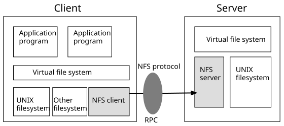
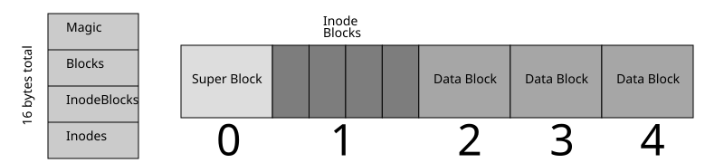
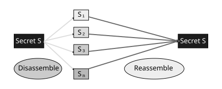
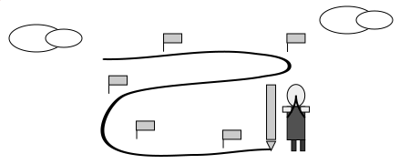
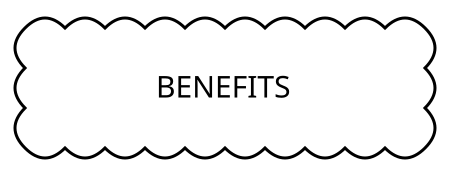

This github repo contains a specialised network filesystem server
A filesystem anchored in blockchain for immutable traceability
It's the audit of activity that is paramount, combined with,
an audit protocol that makes it impossible to bypass
We are interested in the who, what, when
In Collaborative teams the who will come with a context, that too,
is important to track
We call this the Provenance Tracking Filesystem
We started by creating a specialised NFS in Rust and
therefore one that adheres to the NFS interface spec

Here's a simple view of a posix filesystem metadata and data
we must trap and store in order that we have all the data
required to later magic up a virtual filesystem
marshalled by the blockchain

The NFS interface provides the hooks for us to grab the metadata and data
To meet the goals set out earlier, a secret sharing approach is
introduced as part of our protocol
Secret sharing provides additional benefits including
a significant layer of data security and DDOS defence

We forked Aleph Zero to create a bespoke state machine to support our protocol
The compute that underpins the protocol's algorithms presently run off-chain
The compute feeds an OCW with audit points from inside the algorithms
In terms of general blockchain functionality zk-rollups is our target tech feature
JAM does theorectically offer more and better options
Smart contracts are used by the specialised NFS
They facilitate authentication and permissioned access to data
The result is a lightweight data substrate for dApps and apps alike
One that provides intrinsic provenance tracking
- at the file level
- of the team / collaboration grouping
In fact it's a pluggable blockchain native filesystem
- plugs into laptops, phones, iot devices, kubernetes pods
- plugs into dApps and apps
Our current foci include
- launching a direct to market pluggable web3 based service
- placing web3 wallets at the core of the filesystem
- ZNPs that attest to the verified compiled instance of the algorithm used
- pen tests

- proof of origin, proof of creator
- provenance of design outputs including interactions within collaborative teams
- counter intelligence

- we are deployed with a silicon chip design provenance PoC
- we are deployed with an energy IoT PoC
- we are working towards fulfilling a Pharma compliance issue